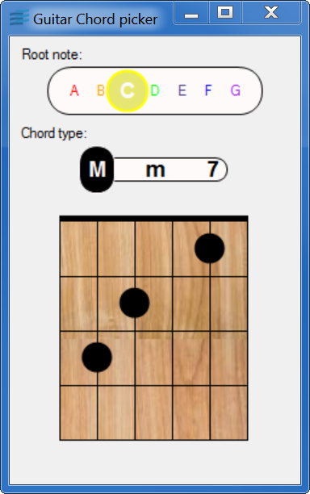

guitarchordsThis sample shows how to create new gadget that lets the user select a value among several values displayed in a horizontal bar with rounded corners.
This sample implements a new control called Picker Bar, displaying as a horizontal bar (potentially with rounded corners). The bar contains a set of value from which the user can select, by clicking on items, on using the keyboard arrow keys.
This new control class, called PickerBar extends
the IlvGadget base class to implement all it needs
to customize the drawing and interaction parts that are needed to
provide the expected user experience.
PickerBar is used natively in the sample application,
and it is also sub-classed to further customized the display.
This gadget could be improved in many ways:
IlvGadget